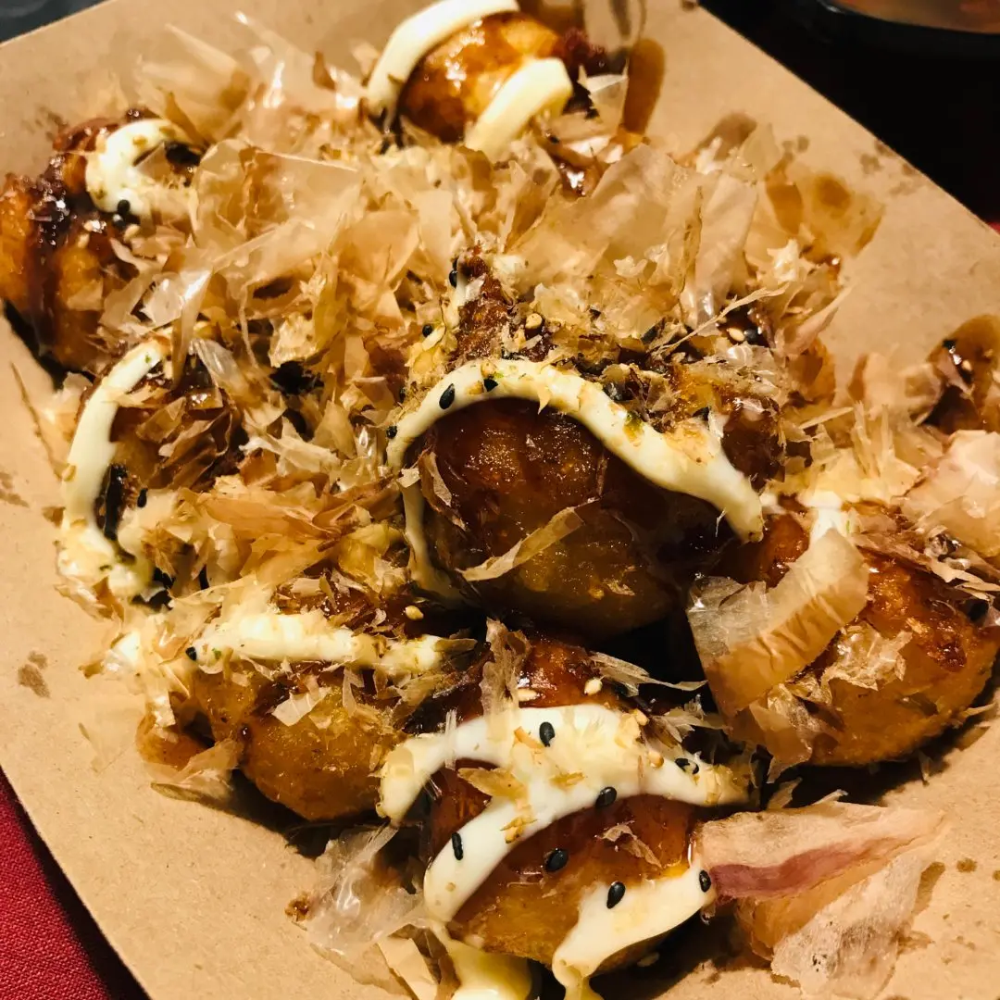

Recipe Detail
Recipe Detail
OctopusBalls

Required ingredients
List of ingredients
- Fresh octopus
- Flour or specialized takoyaki flour
- Eggs
- Green onions, finely chopped
- Red pickled ginger (optional)
- Tempura scraps
- Japanese soy sauce
- Dashi broth or water
- Takoyaki sauce
- Japanese mayonnaise
- Cooking oil
- Large seaweed sheets (chopped)
- Bonito flakes (Katsuobushi)
Other
-
- Difficulty level: difficult
- Required time: 30min
Steps
- Mix eggs, flour, and dashi or water in a large bowl until the batter is smooth.
- Add chopped green onions and tempura scraps.
- Preheat some cooking oil on a takoyaki pan.
- Pour the batter into each hole, filling it about 3/4 full.
- Place a piece of octopus in the center of each hole.
- When the batter begins to set, use a bamboo skewer to turn it, forming a spherical shape.
- Flip the takoyaki ensuring each side is cooked until golden brown.
- Place the cooked takoyaki on a plate, drizzle with takoyaki sauce and Japanese mayonnaise.
- Sprinkle with seaweed and bonito flakes, adding pickled red ginger if available.
- Now, enjoy your delicious takoyaki!